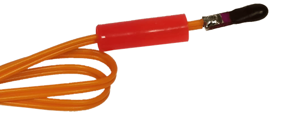

LUXOHM, le testeur d’infla ultra sécurisé

Analyse du besoin
Les inflammateurs pyrotechniques doivent être testés avant utilisation afin de s’assurer que leur circuit interne est intact. Cette vérification se fait en appliquant un courant extrêmement faible entre leurs bornes, bien en dessous des seuils d’inflammation.
Utiliser un multimètre classique peut être dangereux : certains modèles délivrent plusieurs centaines de milliampères, suffisants pour amorcer une charge explosive. Les études de l’Institute of Makers of Explosives et du U.S. Bureau of Mines rapportent des seuils d’inflammation dès 173 à 250 mA.
Objectif du projet LUXOHM :
- assurer un courant de test extrêmement faible,
- offrir un appareil robuste, compact et étanche,
- faciliter l’usage sur le terrain, y compris avec EPI,
- garantir une autonomie de plusieurs années.
Simulation et architecture
Avant toute fabrication, le système a été entièrement simulé sous Spice afin de garantir un courant de test inférieur à 30 µA, soit plus de 5000 fois en dessous des seuils de déclenchement. Le circuit repose sur un comparateur ultra basse consommation et un fusible de sécurité dimensionné pour éliminer tout risque en cas de défaillance.
La consommation en veille a été optimisée sous les 5 µA, permettant une autonomie théorique supérieure à 5 ans sur une simple pile CR2032.

Prototypage
Le design retenu est un médaillon compact intégrant deux zones de contact. Le capot supérieur est usiné en cuivre et soudé directement au PCB pour maximiser la résistance mécanique.
L’électronique est ensuite moulée dans une résine étanche, protégeant le système contre l’humidité, les chocs et les manipulations répétées. Un retour utilisateur par vibration a été choisi pour garantir une lecture fiable même en plein soleil, dans le bruit ou avec casque et gants.

Design et ergonomie
LUXOHM a été conçu pour résister à l’usage terrain : structure robuste, volume réduit, manipulation intuitive à une main. Le boîtier final adopte une forme simple et durable, optimisée pour être portée, rangée ou utilisée directement en conditions exigeantes.

Tests et validation
Les mesures du prototype final ont confirmé la précision des simulations. Les courants de test restent largement en dessous des seuils critiques, garantissant une sécurité totale pour tous les infla standards.
Des essais en laboratoire, puis en conditions terrain, ont validé la robustesse, la répétabilité et la simplicité d’utilisation du système. LUXOHM répond pleinement aux besoins des techniciens pyrotechniques : sécurité absolue, compacité, autonomie multi-annuelle.
Conclusion
LUXOHM met l’accent sur la sécurité, la fiabilité et la simplicité d’usage. Il illustre la capacité d’Orbivia à concevoir des systèmes électroniques dédiés à des environnements critiques, associant simulations rigoureuses, prototypage robuste et validation terrain.